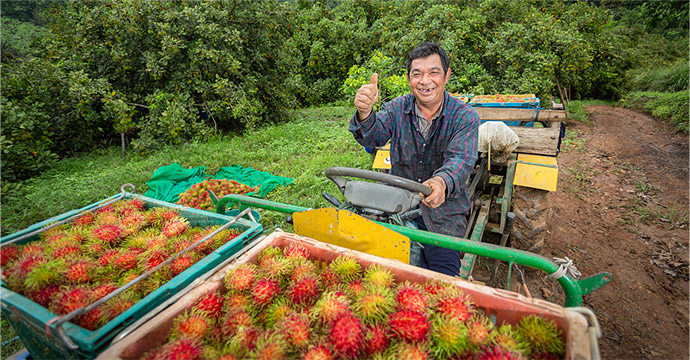

农家苹果 红苹果 红富士 欢迎来电咨询农家苹果 红苹果 红富士 欢迎来电咨询
130 0000 0000 3685次浏览
王先生
山东省-济南市-历城区
详细信息

日前，习近平总书记在山东考察时，下基层、进农村、访民生，多次就乡村振兴战略实施中的人才培育、组织建设、农民增收、移风易俗等工作作出重要指示，提出要“打造乡村振兴的齐鲁样板”。这既是总书记对于山东作为农业大省明确首要职责、肩负关键使命的殷切期望，更是总书记对于做好全局“三农”工作、落实乡村振兴战略的新要求和再动员，对做好当前和今后一个时期农业农村工作具有重大的指导意义。我们一定要认真学习、全面贯彻。